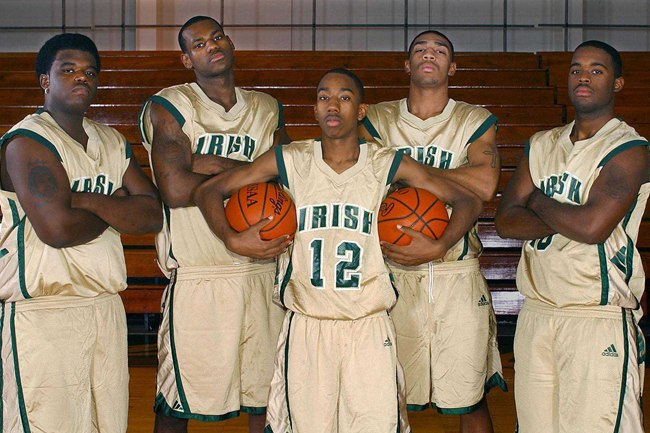

어린 시절
오하이오 주 애크런에서 태어났다. 제임스의 어머니 글로리아는 16살 때 제임스를 낳았고, 아버지 없이 르브론을 키워야 했기에 르브론은 매우 가난한 유년 시절을 보냈다.
그런 르브론의 딱한 사정을 눈여겨 본 것이 초등학교 친구의 아버지인 프랭크 워커였다.
워커는 글로리아가 생활 기반을 마련하는 동안 르브론을 키워주기로 했다.
르브론은 처음으로 규칙적이고 안정적인 삶을 경험했고, 워커의 다른 자녀와 함께 가정교육을 받게 된다.

르브론이 농구에 엄청난 재능이 있다는 사실을 안 워커는 그를 농구 스쿨에 보내 제대로 농구를 배우게 했고, 르브론은 여기서 시언 코튼, 드류 조이스 3세, 윌리 맥기 등의 친구들과 훗날 고등학교 은사들을 만나게 된다.
고등학교에 진학할 무렵, 르브론은 세인트 빈센트-세인트 메리 고등학교에 입학했다.
애크런에서 농구 잘하는 흑인 학생은 부틀 고등학교에 가는 것이 관례였지만 부틀에서는 함께 농구하던 친구를 거절했고 친구와 계속 농구를 하고 싶었던 르브론은 세인트 빈센트-세인트 메리 입학을 결정한다.
세인트 빈센트-세인트 메리는 농구에서는 완전히 무명인 학교였다.
르브론과 친구들은 빈센트-세인트 메리를 1984년 이후 처음으로 주 챔피언으로 이끄는 것을 시작으로 엄청난 활약을 하며 지역을 들썩이게 만들었다.
점점 몸이 자라던 르브론의 기량은 이미 고등학생을 초월한 수준이었다.
르브론 제임스가 한창 고등학교에서 뛸 시기에 당장 NBA에 가도 주전으로 뛸 수 있다는 평이었고, 실제로 고등학교 때 받을 수 있는 상이란 상을 다 휩쓸었다.
친구와 함께하기 위해 농구 명문을 포기하고 무명 팀에 입학하여 그 팀을 전국 최강으로 만드는 만화 같은 이야기에 언론의 주목도는 엄청났다.
르브론은 고등학생 때부터 어지간한 프로선수들 정도의 관심을 받았다. 르브론을 중계하기 위해 이례적으로 13년 만에 고등학생 농구 시합이 미전역으로 방송될 정도였다.
그리고, 2003년 드래프트 1픽으로 클리블랜드 캐벌리어스에 지명되면서 르브론은 NBA 선수가 되었다.
클리블랜드 1기
2003/2004 시즌
2003년 드래프트 유망주 중 제임스는 단연 스포트라이트를 독식했다.
클리블랜드는 오랜만에 찾아온 오하이오 주 출생의 프렌차이즈 스타인 제임스를 애지중지 아꼈다.
팀 로스터 구성도 제임스의 입맛에 맞게 구성해주었고, 제임스가 언론에 공격을 받는다 싶으면 아낌없이 실드를 쳐주었다.
또 팀은 르브론 제임스가 프로에 잘 적응하게 하기 위해 03-04시즌 인성을 중시하는 폴 실라스를 감독으로 선임했다.
제임스를 위주로 팀이 돌아가는 것을 탐탁치 않게 여기던 리키 데이비스를 트레이드시키기도 했다.
제임스도 좋은 플레이로 보답했고, 지역봉사를 통해 팬들과 호흡했다.
르브론은 03-04 시즌 20.9득점 5.5리바 5.9어시스트를 기록하면서 신인상을 수상한다.
우승은커녕 플레이오프 진출도 잘 하지 못하던 팀을 이후 일약 우승 후보 팀으로 만들었다.
데뷔 시즌의 성과는 상당해서 직전시즌 17승 65패를 했던 팀이 35승 47패로 많은 승수를 차지하게 되었다.
시즌 성적
79경기 39.6분 20.9득점 5.5리바운드 5.9어시스트 1.6스틸
2004/2005 시즌
04-05 시즌으로 들어가기 직전 팀에서 중추적 역할을 하던 파워포워드 카를로스 부저의 배신 사건으로 인해서 팀 코어를 한순간에 잃어버리는 사건이 일어난다.
어수선한 상황이었으나 04-05 시즌은 오히려 직전 시즌보다 더 강한팀으로 거듭난다.
르브론의 능력이 작년 시즌에 비해서 일취월장했기 때문이다.
다소 어리숙했던 돌파 마무리 능력이 리그 최정상급으로 발전했고, 정확해진 3점슛, 야투율이 무려 5% 가까이 증가해서 득점력이 크게 올랐다.
만 20세 나이로 역대 최연소 트리플더블 기록하고 최연소 All-nba 세컨팀에 선정되었으며 팀 성적도 42승 40패로 5할 승률을 이끌었다.
만 20세의 선수가 이런 어마어마한 시즌을 보내니 당시의 반응은 굉장히 센세이션했다.
시즌 성적
80경기 42.3분 27.2득점 7.4리바운드 7.2어시스트 2.2스틸
2005/2006 시즌
05-06시즌 부터는 리그를 대표하는 선수가 된다.
시즌 중간에는 만 21세 나이로 올스타 MVP를 수상하는데 리그 최연소 기록이다.
팀은 50승 32패로 성적을 대폭 끌어올렸다.
시즌 성적
79경기 42.5분 31.4득점 7.0리바운드 6.6어시스트 1.6스틸
2006/2007 시즌
06-07 시즌엔 동부 컨퍼런스 우승을 경험하게 된다.
당시 동부 컨퍼런스의 상대는 이제 내리막길이긴 했지만 막강한 수비력으로 2000년대를 지배하던 디트로이트 피스톤즈였다.
반면에 클리블랜드는 르브론을 제외하고는 어정쩡한 멤버 그 자체였다.
그러나 이 당시 르브론은 경이로운 수준의 활약으로 당대 최강팀의 수비를 완전히 박살내버렸고, 팀을 NBA 파이널로 인도하였다.
이 당시 르브론의 퍼포먼스에 대해 농구 팬들이 외계인에 빗대며 디트로이트 침공이라 표현한다.
엄청난 활약을 하며 파이널로 팀을 인도한 르브론이였지만, 파이널에서 기다리고 있던 상대는 왕조를 이룬 최강의 팀 샌안토니오 스퍼스였다.
스퍼스엔 NBA 역대 최고의 파워포워드 팀 던컨, 슈퍼 식스맨 마누 지노빌리, 탑클래스 PG 토니 파커 이른바 빅3가 기다리고 있었고 시리즈 내내 클리블랜드는 완벽하게 패하고 말았다.
클리블랜드가 믿을 수 있는 건 르브론 밖에 없었지만 그 당시만 해도 돌파 외에는 별다른 공격 수단이 없었던 르브론은 샌안토니오의 수비에 막히자 별다른 수도 써보지 못했다.
결국 이 파이널은 역사상 가장 일방적으로 끝난 시리즈가 되었으며, 클리블랜드도 르브론도 아무것도 해보지 못하고 0:4로 박살이 나버렸다.
시즌 성적
78경기 40.9분 27.3득점 6.7리바운드 6.0어시스트 1.6스틸
2007/2008 시즌